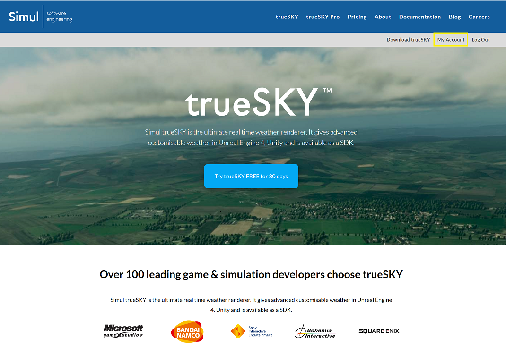
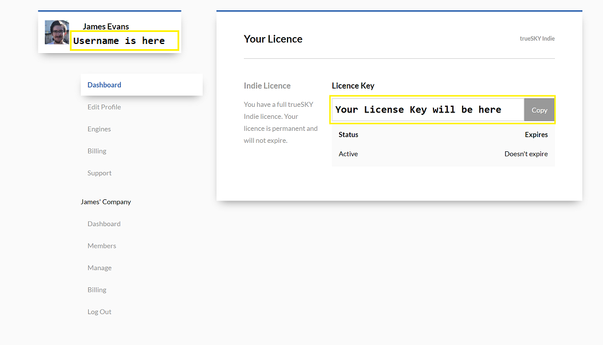
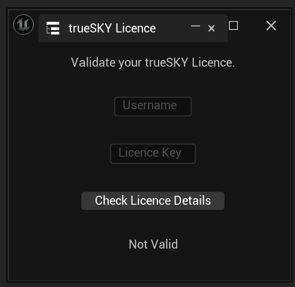
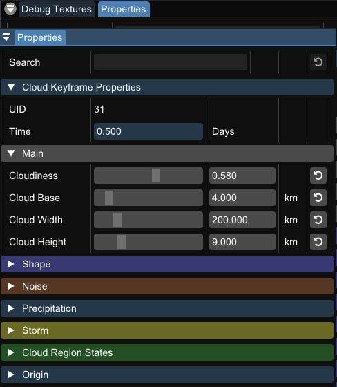
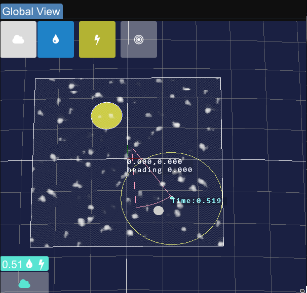

trueSKY Editor¶
Registration¶
Before you can edit anything on the Sequencer, you need to have entered your username and valid licence key. This is entered in the login window that will appear on first initialization.
These details can be found in your account dashboard at https://simul.co/account. If you do not have an account, sign up now at https://simul.co/register/. We offer a 30 day free trial of trueSKY, but after the trial period you will need to purchase a licence. You can find more information about licensing here.
1: Login to your account at simul.co and click my account.

2: Your username and licence key are in the account dashboard. Your username is at the top left, underneath your name. Your licence key is on the right in the licence section.

3: When you first launch or intitialize the editor in Unreal, a pop-up will appear asking for your licence details

Properties¶
The properties panel contains information about the currently selected keyframe or layer. This can all be edited, with changed taking place in real time. This panel will only show up if you have selected a keyframe.
To edit a keyframe, first select it with left click. This will bring up all the keyframes variables in the details column.

This is the details panel of a selected Cloud Keyframe
Now you can see all the variables that can be altered within the Sequencer. You can either drag the bar to alter the value, or edit the values by typing. All of the values are clamped to certain ranges. Plus, each value can be returned to its default position with the yellow arrow to the right of the value. This arrow will only appear of the value has been changed from it’s default state.
Layers also have their own settings which will change the values of all the keyframes in that layer. An example of this is within the Sky layer, you can adjust the parameters of the sun. This effect will take place for all the Sky Keyframes. To edit a layer’s properties, click on the settings symbol next to the layer name. To see what each of the settings do, head over to our Cloud, Sky, or Storm pages.
Global View¶
The Global View is a overall view of the world, where you can see the current cloud formations, layers and volumes. You can zoom in and out with the mouse wheel, and drag the world around by holding right click and dragging in a direction. Pressing in the middle mouse allows you to adjust the viewing angle.
Selecting a keyframe, either through the timeline or the display at the bottom of the global view, will allow you to position the keyframe in your scene, and will move all volumes in relation to the keyframes origin.
The Red Arc is your current view in the project. This can be helpful for figuring out what direction you are looking in, in relation to trueSKY.
The options at the top of the global view represent Cloud, Precipitation, Storm and Region Editing modes. Selecting a mode will enable editing for it, and disabling will remove it from the view.
If you select a keyframe, the layer width is represented by the box with the colour of the layer. To find out more about how to use the global vieww to control precipitation, please view this tutorial.

Sequence¶
A sequence is a collection of Layers and keyframes, that can be saved and used in any scene that incorporates trueSKY. There can only be one sequence active at a time, although you can switch between them at run-time. You can use sequences to save specific weather formations for set times of the day.